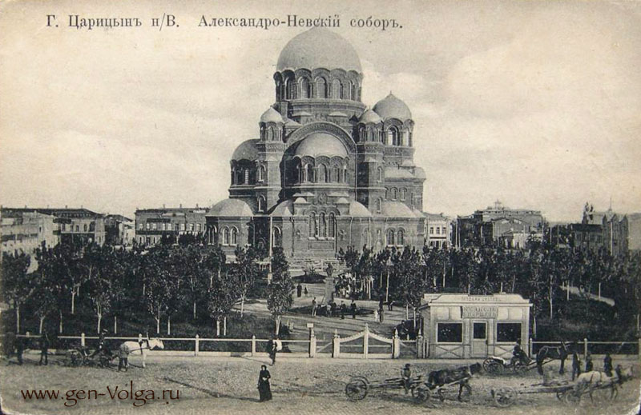
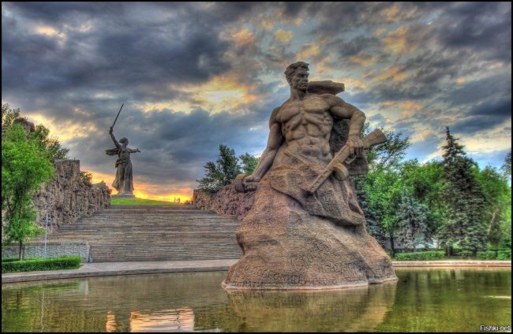
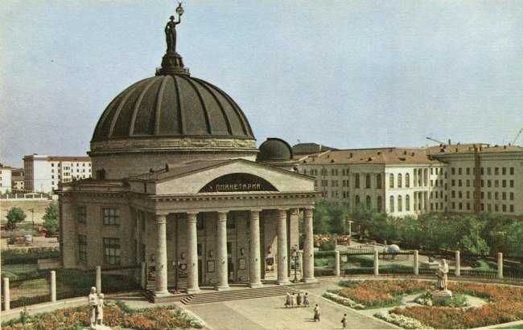
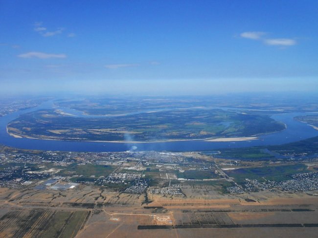

-
Volgograd is one of the most significant cities in the Southern Federal District. Its importance lies not only in the fact that it is literally soaked through with history, but also because Volgograd is in fact the most important transport hub of its entire region.
The city received its name "Volgograd" only in 1961. Before that, it was called Stalingrad, and even earlier, for almost four centuries, it was called Tsaritsyn.

Motherland. This monument was in its time the highest sculpture entered in the Guinness Book of Records: its height reaches 52 m, and the length of the sword held by the Mother-Mother is 29 m, the total height is 85 m. Its construction lasted 8 years.

In the distant year 1954, a truly impressive planetarium was opened here.

In Volgograd, on the Volga River, is the largest river island in Russia - Sarpinsky.
